Snakes of Indonesia
357 snake species are recorded in Indonesia in SnakeList: 91 venomous and 266 non-venomous, from 15 families.
- 357species
- 91venomous
- 266non-venomous
- 15families
Species
Showing 357 species
- No photo yetAceh Wolf SnakeLycodon sidiki
- No photo yetAndian Stout-tailed SnakeCalamophis katesandersae
 Annulated Sea SnakeHydrophis cyanocinctus
Annulated Sea SnakeHydrophis cyanocinctus- No photo yetAnomalous Sea SnakeHydrophis anomalus
- No photo yetApreocular Reed SnakeCalamaria apraeocularis
- No photo yetArfak Stout-tailed SnakeCalamophis sharonbrooksae
- No photo yetAru Cylinder SnakeCylindrophis aruensis
- No photo yetAru Island GroundsnakeStegonotus aruensis
- No photo yetAru Mangrove SnakeMyron karnsi
 Ashy Pit-viperCraspedocephalus puniceus
Ashy Pit-viperCraspedocephalus puniceus Asian Slug SnakeAsthenodipsas vertebralis
Asian Slug SnakeAsthenodipsas vertebralis- No photo yetAyamaru GroundsnakeStegonotus ayamaru
- No photo yetBabongan Kukri SnakeOligodon pulcherrimus
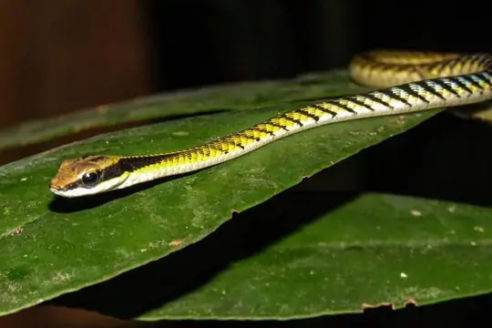
Banded BronzebackDendrelaphis striatus Banded KraitBungarus fasciatus
Banded KraitBungarus fasciatus- No photo yetBanded Pit ViperTrimeresurus fasciatus
- No photo yetBanded WatersnakeDjokoiskandarus annulata
 Banggai Reed SnakeCalamaria banggaiensis
Banggai Reed SnakeCalamaria banggaiensis- No photo yetBarat Bamboo PitviperTrimeresurus barati
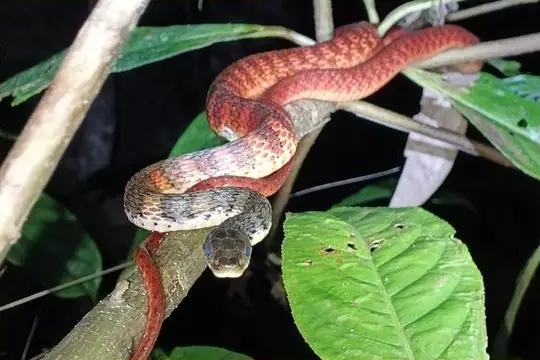
Barred KeelbackTropidonophis doriae Barred Kukri SnakeOligodon signatus
Barred Kukri SnakeOligodon signatus Barred Slug-eating SnakePareas nuchalis
Barred Slug-eating SnakePareas nuchalis Batjan Frog-eating SnakeStegonotus batjanensis
Batjan Frog-eating SnakeStegonotus batjanensis- No photo yetBatjan Iridescent SnakeCalamorhabdium kuekenthali
- No photo yetBattersby's Reed SnakeCalamaria battersbyi
- No photo yetBelcher's Sea SnakeHydrophis belcheri
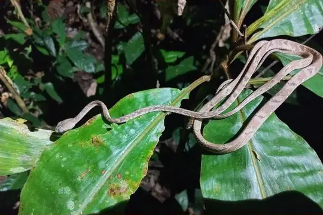
Bengkulu Cat SnakeBoiga bengkuluensis- No photo yetBengkulu Reed SnakeCalamaria alidae
 Bicoloured Reed SnakeCalamaria bicolor
Bicoloured Reed SnakeCalamaria bicolor- No photo yetBighead Sea SnakeHydrophis annandalei
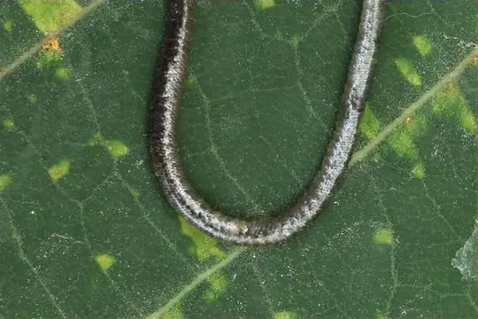
Black blindsnakeGerrhopilus ater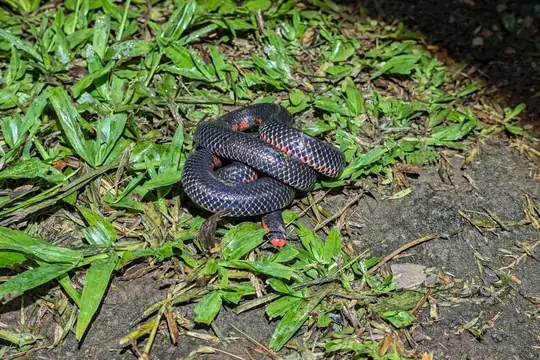
Black Pipe SnakeCylindrophis melanotus Black-headed Cat SnakeBoiga nigriceps
Black-headed Cat SnakeBoiga nigriceps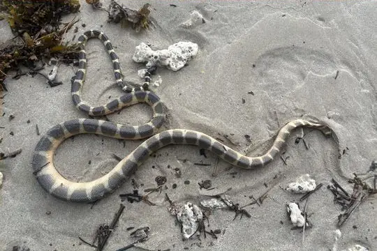
Black-headed seasnakeHydrophis atriceps Blackwater Mud SnakePhytolopsis punctata
Blackwater Mud SnakePhytolopsis punctata- No photo yetBlanford's Pipe SnakeCylindrophis lineatus
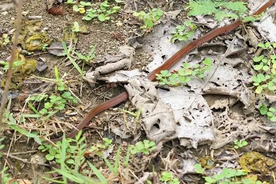
Bleek's Kukri SnakeOligodon waandersi- No photo yetBleeker's Dwarf SnakeCalamaria margaritophora
 Blood Python (curtus)Python curtus
Blood Python (curtus)Python curtus Blue Coral SnakeCalliophis bivirgatus
Blue Coral SnakeCalliophis bivirgatus Blue KraitBungarus candidus
Blue KraitBungarus candidus Blue-necked KeelbackRhabdophis rhodomelas
Blue-necked KeelbackRhabdophis rhodomelas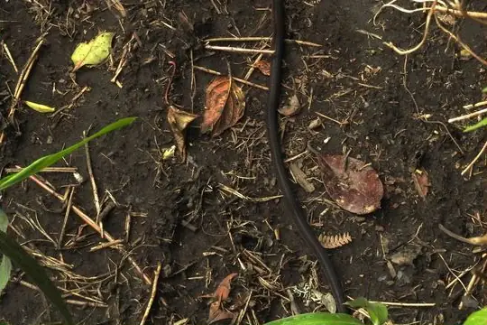
Bluebelly Java SnakeTetralepis fruhstorferi Blunthead Slug SnakeAplopeltura boa
Blunthead Slug SnakeAplopeltura boa- No photo yetBoano PipesnakeCylindrophis osheai
- No photo yetBoenjoe Island Worm SnakeMalayotyphlops koekkoeki
- No photo yetBoeseman's Reed SnakeCalamaria boesemani
- No photo yetBoettger's KeelbackRhabdophis callistus
 Boie's Dwarf SnakeCalamaria virgulata
Boie's Dwarf SnakeCalamaria virgulata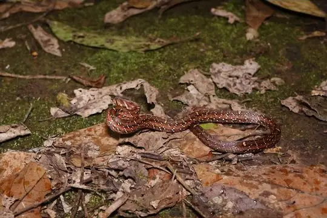
Boie's Kukri SnakeOligodon bitorquatus Boie's Many-Tooth SnakeSibynophis geminatus
Boie's Many-Tooth SnakeSibynophis geminatus Boie's Mud SnakeHypsiscopus plumbea
Boie's Mud SnakeHypsiscopus plumbea Bornean Black SnakeStegonotus borneensis
Bornean Black SnakeStegonotus borneensis Bornean Reed SnakeCalamaria borneensis
Bornean Reed SnakeCalamaria borneensis Borneo Pit ViperCraspedocephalus borneensis
Borneo Pit ViperCraspedocephalus borneensis Borneo PythonPython breitensteini
Borneo PythonPython breitensteini- No photo yetBorneo Red SnakeStoliczkia borneensis
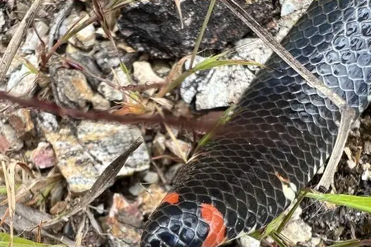
Boulenger's Pipe SnakeCylindrophis boulengeri- No photo yetBridled KeelbackHebius frenatus
 Broad-banded Temple PitviperTropidolaemus laticinctus
Broad-banded Temple PitviperTropidolaemus laticinctus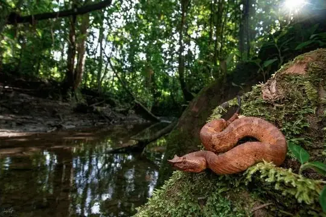
Brongersma's Pit ViperCraspedocephalus brongersmai- No photo yetBrongersma's Reed SnakeCalamaria brongersmai
 Brook's Sea SnakeHydrophis brookii
Brook's Sea SnakeHydrophis brookii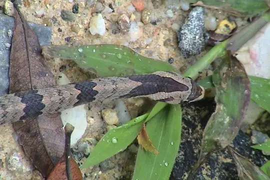
Brown Kukri SnakeOligodon purpurascens Brown Wolf SnakeLycodon effraenis
Brown Wolf SnakeLycodon effraenis- No photo yetBrown Worm SnakeArgyrophis fuscus
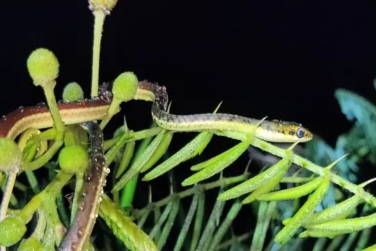
Burmese BronzebackDendrelaphis subocularis Burmese PythonPython bivittatus
Burmese PythonPython bivittatus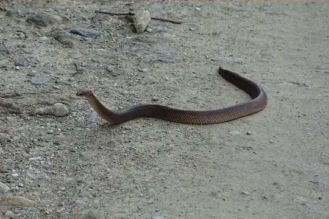
Buru Short-tailed SnakeBrachyorrhos gastrotaenius Buton Island Dwarf SnakeCalamaria butonensis
Buton Island Dwarf SnakeCalamaria butonensis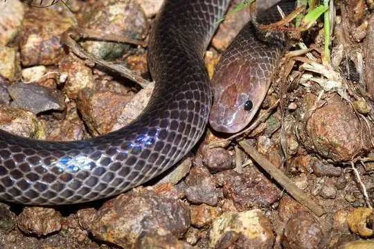
Carpentaria Whip SnakeCryptophis boschmai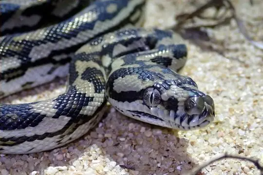
Carpet PythonMorelia spilota Cave RacerElaphe taeniura
Cave RacerElaphe taeniura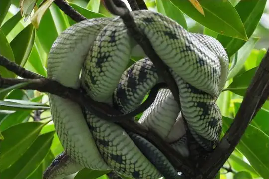
Celebes Black-tailed RatsnakeGonyosoma jansenii Ceram Dwarf SnakeCalamaria ceramensis
Ceram Dwarf SnakeCalamaria ceramensis- No photo yetCheckered KeelbackXenochrophis piscator
 Chequered KeelbackFowlea piscator
Chequered KeelbackFowlea piscator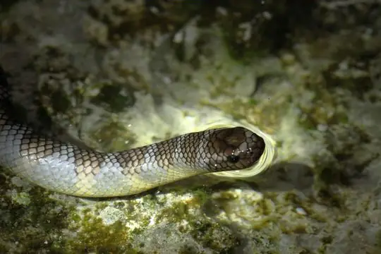
Chinese Sea SnakeLaticauda semifasciata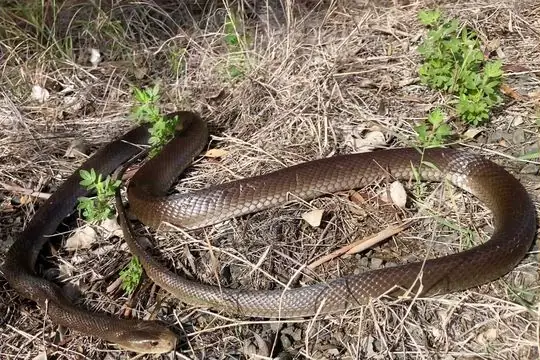
Coastal TaipanOxyuranus scutellatus Collared Reed Snake (leucogaster)Calamaria leucogaster
Collared Reed Snake (leucogaster)Calamaria leucogaster Collared Reed Snake (pavimentata)Calamaria pavimentata
Collared Reed Snake (pavimentata)Calamaria pavimentata Common Bamboo ViperCraspedocephalus gramineus
Common Bamboo ViperCraspedocephalus gramineus Common Collared SnakePseudorabdion collaris
Common Collared SnakePseudorabdion collaris Common Mock ViperPsammodynastes pulverulentus
Common Mock ViperPsammodynastes pulverulentus Common sea kraitLaticauda laticaudata
Common sea kraitLaticauda laticaudata Common SeasnakeHydrophis schistosus
Common SeasnakeHydrophis schistosus Common Wolf Snake (capucinus)Lycodon capucinus
Common Wolf Snake (capucinus)Lycodon capucinus- No photo yetConrad's Worm SnakeRamphotyphlops conradi
- No photo yetDark-bellied Reed SnakeCalamaria curta
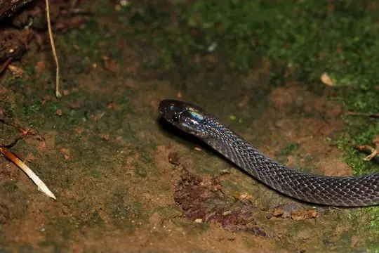
Dark-Grey Ground SnakeElapoidis fusca De Rooij's groundsnakeStegonotus derooijae
De Rooij's groundsnakeStegonotus derooijae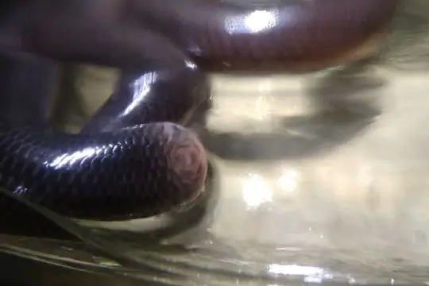
Deharveng's Blind SnakeCyclotyphlops deharvengi Diard's BlindsnakeArgyrophis diardii
Diard's BlindsnakeArgyrophis diardii Dog-toothed Cat SnakeBoiga cynodon
Dog-toothed Cat SnakeBoiga cynodon Dragon snakeXenodermus javanicus
Dragon snakeXenodermus javanicus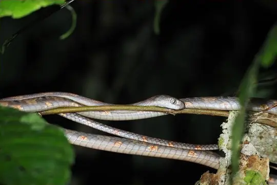
Drapiez's Cat SnakeBoiga drapiezii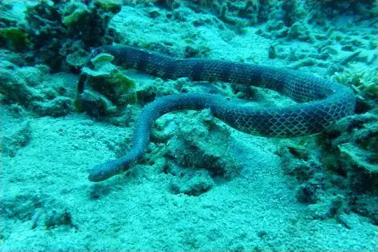
Dubois' Sea SnakeAipysurus duboisii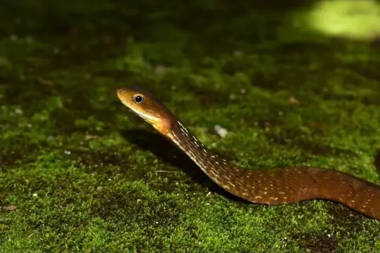
Dull Bamboo SnakePseudoxenodon inornatus Dusky Wolf SnakeLycodon albofuscus
Dusky Wolf SnakeLycodon albofuscus Dwarf Reed SnakePseudorabdion longiceps
Dwarf Reed SnakePseudorabdion longiceps Dwarf SeasnakeHydrophis caerulescens
Dwarf SeasnakeHydrophis caerulescens- No photo yetDöderlein's Reed SnakeCalamaria doederleini
 Eastern Russel's ViperDaboia siamensis
Eastern Russel's ViperDaboia siamensis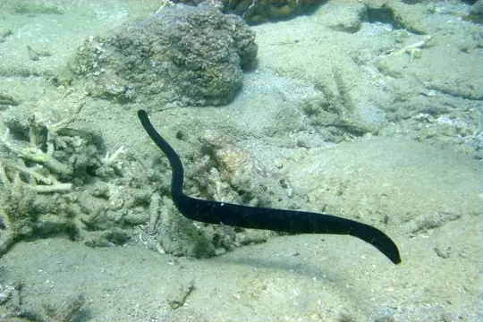
Egg-eating Sea SnakeEmydocephalus annulatus Eight-striped Kukri SnakeOligodon octolineatus
Eight-striped Kukri SnakeOligodon octolineatus- No photo yetEiselt's Dwarf Reed SnakePseudorabdion eiselti
- No photo yetEiselt's Reed SnakeCalamaria eiselti
 Elegant BronzebackDendrelaphis formosus
Elegant BronzebackDendrelaphis formosus Enggano Rat SnakeCoelognathus enganensis
Enggano Rat SnakeCoelognathus enganensis Equatorial Spitting CobraNaja sumatrana
Equatorial Spitting CobraNaja sumatrana Everett's Kukri SnakeOligodon everetti
Everett's Kukri SnakeOligodon everetti- No photo yetEverett's Reed SnakeCalamaria everetti
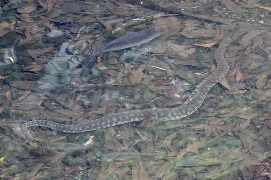
FilesnakeAcrochordus arafurae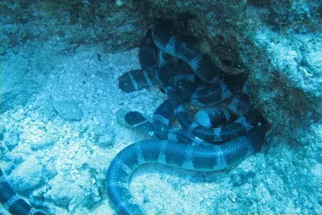
Flat-tail Sea Snake (schistorhyncha)Laticauda schistorhyncha- No photo yetFlores Ground SnakeStegonotus florensis
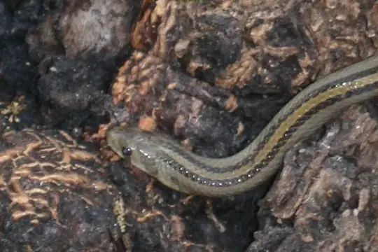
Forbes' Kukri SnakeOligodon forbesi- No photo yetForcart's Reed SnakeCalamaria forcarti
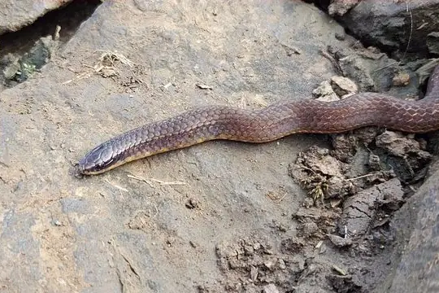
Forsten's Pointed SnakeRabdion forsteni Freckled PythonLiasis mackloti
Freckled PythonLiasis mackloti Gold-ringed Cat Snake (dendrophila)Boiga dendrophila
Gold-ringed Cat Snake (dendrophila)Boiga dendrophila Gold-ringed Cat Snake (melanota)Boiga melanota
Gold-ringed Cat Snake (melanota)Boiga melanota Gray Bronzeback (caudolineatus)Dendrelaphis caudolineatus
Gray Bronzeback (caudolineatus)Dendrelaphis caudolineatus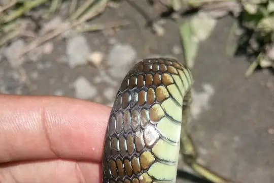
Gray Bronzeback (modestus)Dendrelaphis modestus Green Tree PythonMorelia viridis
Green Tree PythonMorelia viridis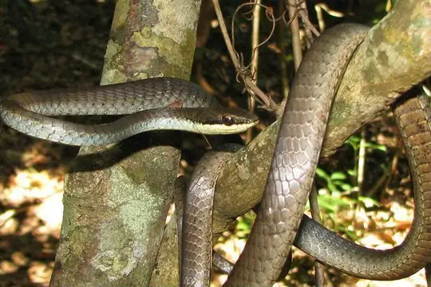
Green treesnakeDendrelaphis calligaster- No photo yetGroves' Pointed SnakeRabdion grovesi
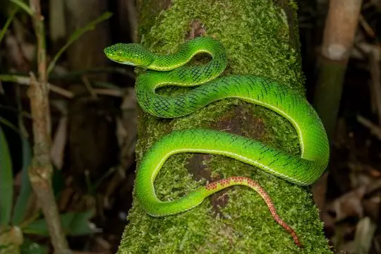
Gunalen's PitviperTrimeresurus gunaleni- No photo yetGunung Kerinchi KeelbackHebius kerinciensis
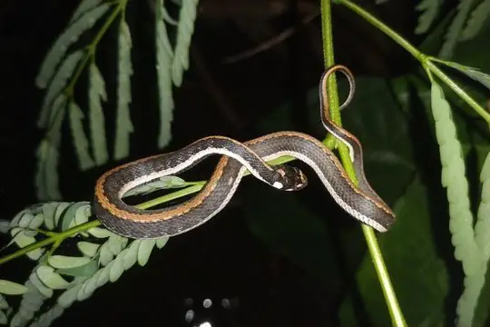
Günther's KeelbackRhabdophis chrysargoides Haas's Bronzeback SnakeDendrelaphis haasi
Haas's Bronzeback SnakeDendrelaphis haasi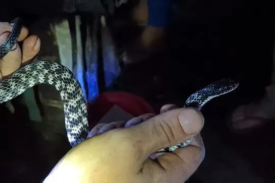
Halmahera KeelbackTropidonophis punctiventris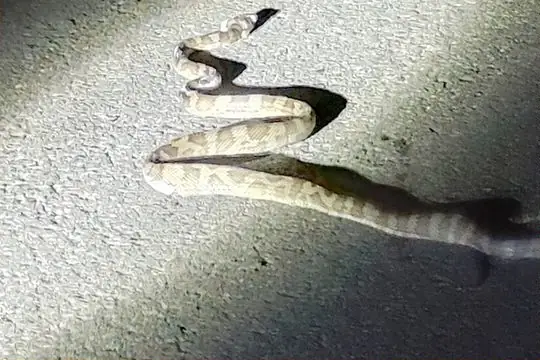
Halmahera PythonSimalia tracyae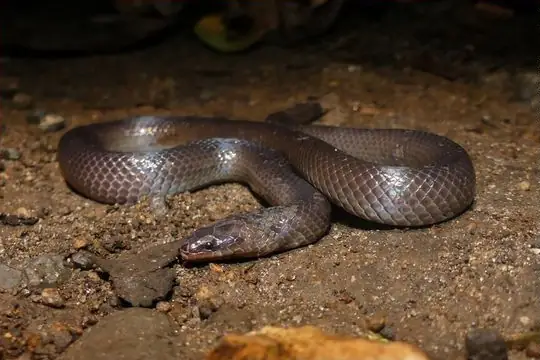
Halmahera Short-tailed SnakeBrachyorrhos wallacei- No photo yetHardwicke's Spine-bellied SeasnakeHydrophis hardwickii
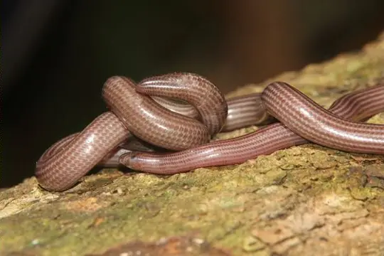
Hook-nosed BlindsnakeRamphotyphlops multilineatus- No photo yetIkaheka SnakeMicropechis ikaheka
 Indian Rock PythonPython molurus
Indian Rock PythonPython molurus Indo-Chinese Rat SnakePtyas korros
Indo-Chinese Rat SnakePtyas korros Indo-Chinese Sand SnakePsammophis indochinensis
Indo-Chinese Sand SnakePsammophis indochinensis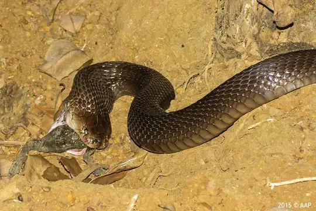
Indonesian CobraNaja sputatrix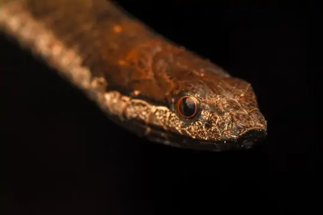
Indonesian KeelbackTropidonophis truncatus Indonesian Pit ViperTrimeresurus hageni
Indonesian Pit ViperTrimeresurus hageni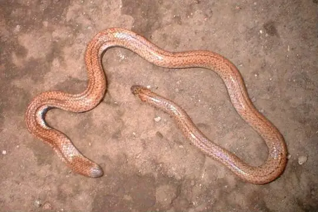
Island Pipe SnakeCylindrophis opisthorhodus- No photo yetJampea Island Pipe SnakeCylindrophis isolepis
 Jasper Cat SnakeBoiga jaspidea
Jasper Cat SnakeBoiga jaspidea Javan File SnakeAcrochordus javanicus
Javan File SnakeAcrochordus javanicus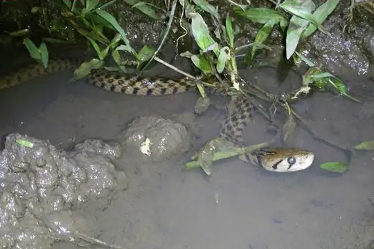
Javan Keelback Water SnakeFowlea melanozostus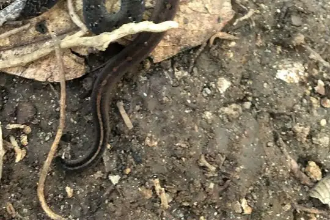
Javanese Kukri SnakeOligodon propinquus Javanese Reed SnakeCalamaria javanica
Javanese Reed SnakeCalamaria javanica- No photo yetKalimantan Sea SnakeHydrophis sibauensis
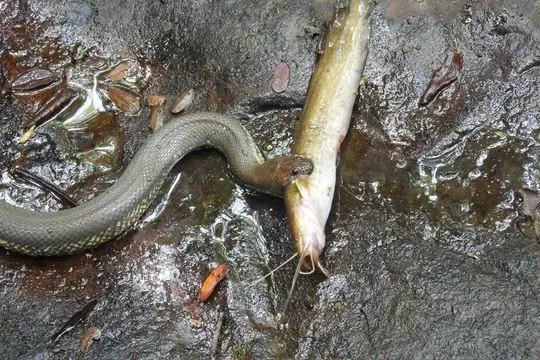
Kapuas Mud SnakeHomalophis gyii- No photo yetKapuas Reed SnakeCalamaria melanota
- No photo yetKebar Stout-tailed SnakeCalamophis ruuddelangi
 Keeled Rat SnakePtyas carinata
Keeled Rat SnakePtyas carinata Keeled Slug SnakePareas carinatus
Keeled Slug SnakePareas carinatus- No photo yetKei Island GroundsnakeStegonotus keyensis
- No photo yetKei Island Worm SnakeMalayotyphlops kraalii
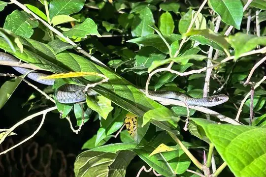
Kei TreesnakeDendrelaphis keiensis King CobraOphiophagus hannah
King CobraOphiophagus hannah- No photo yetKloss' Sea SnakeHydrophis klossi
 Kopstein's Bronzeback SnakeDendrelaphis kopsteini
Kopstein's Bronzeback SnakeDendrelaphis kopsteini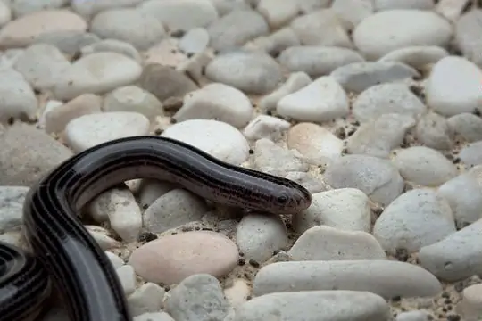
Lesser Sunda BlindsnakeSundatyphlops polygrammicus Lesser Sundas BronzebackDendrelaphis inornatus
Lesser Sundas BronzebackDendrelaphis inornatus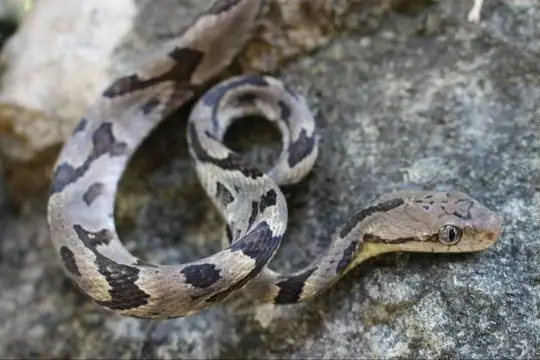
Lesser Sundas Cat SnakeBoiga hoeseli Linne's Dwarf SnakeCalamaria linnaei
Linne's Dwarf SnakeCalamaria linnaei Linne's Water SnakeHomalopsis buccata
Linne's Water SnakeHomalopsis buccata- No photo yetLong-snouted Dwarf SnakeCalamaria longirostris
- No photo yetLong-tailed RingneckGongylosoma longicauda
- No photo yetLorentz River treesnakeDendrelaphis lorentzii
- No photo yetLorenz's Blind SnakeRamphotyphlops lorenzi
 Low's Reed SnakeCalamaria lovii
Low's Reed SnakeCalamaria lovii Lumholz's Reed SnakeCalamaria lumholtzi
Lumholz's Reed SnakeCalamaria lumholtzi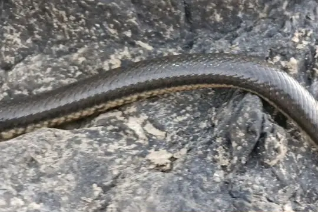
Macleay's Mud SnakePseudoferania polylepis Malayan Banded Wolf SnakeLycodon subcinctus
Malayan Banded Wolf SnakeLycodon subcinctus Malayan Bridal SnakeLycodon subannulatus
Malayan Bridal SnakeLycodon subannulatus Malayan Brown Pit ViperOvophis convictus
Malayan Brown Pit ViperOvophis convictus Malayan Brown SnakeXenelaphis hexagonotus
Malayan Brown SnakeXenelaphis hexagonotus Malayan Many-tooth SnakeSibynophis melanocephalus
Malayan Many-tooth SnakeSibynophis melanocephalus Malayan Pit ViperCalloselasma rhodostoma
Malayan Pit ViperCalloselasma rhodostoma Malayan RingneckLiopeltis tricolor
Malayan RingneckLiopeltis tricolor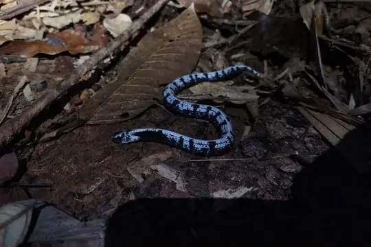
Malayan Slug SnakeAsthenodipsas malaccanus Malayan WhipsnakeAhaetulla mycterizans
Malayan WhipsnakeAhaetulla mycterizans Malcolm's PitviperTrimeresurus malcolmi
Malcolm's PitviperTrimeresurus malcolmi- No photo yetMamberano Mud SnakeHeurnia ventromaculata
- No photo yetManukwari Blind SnakeRamphotyphlops similis
 Many-scaled KeelbackTropidonophis multiscutellatus
Many-scaled KeelbackTropidonophis multiscutellatus Many-spotted Cat SnakeBoiga multomaculata
Many-spotted Cat SnakeBoiga multomaculata Maren's BronzebackDendrelaphis marenae
Maren's BronzebackDendrelaphis marenae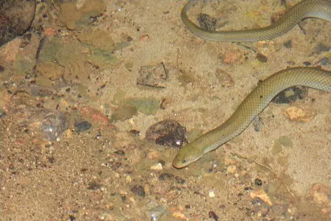
Matana Mud SnakeHypsiscopus matannensis- No photo yetMechel's Reed SnakeCalamaria mecheli
 Modest Dwarf SnakeCalamaria modesta
Modest Dwarf SnakeCalamaria modesta- No photo yetModigliani's Dwarf Reed SnakePseudorabdion modiglianii
 Moluccan Flying SnakeChrysopelea rhodopleuron
Moluccan Flying SnakeChrysopelea rhodopleuron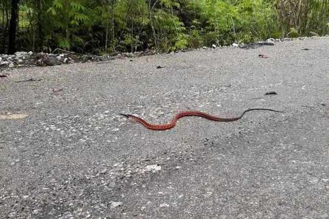
Moluccan KeelbackTropidonophis elongatus- Montane TreesnakeDendrelaphis gastrostictus
 Mountain Slug SnakePareas margaritophorus
Mountain Slug SnakePareas margaritophorus- No photo yetMueller's Reed SnakeCalamaria muelleri
 Müller's Blind SnakeArgyrophis muelleri
Müller's Blind SnakeArgyrophis muelleri- Müller's Crown SnakeAspidomorphus muelleri
 Narrow-headed Reed SnakeCalamaria nuchalis
Narrow-headed Reed SnakeCalamaria nuchalis- No photo yetNew Britain KeelbackTropidonophis dahlii
- New Guinea BronzebackDendrelaphis lineolatus
- New Guinea KeelbackTropidonophis novaeguineae
- New Guinea Viper BoaCandoia aspera
- No photo yetNorth Irian Montane KeelbackTropidonophis montanus
 Northern New Guinea Ground SnakeStegonotus modestus
Northern New Guinea Ground SnakeStegonotus modestus- No photo yetNorthern New Guinea KeelbackTropidonophis mcdowelli
- Northern White-Lipped PythonLeiopython albertisii
- Ocellated Brown SnakeXenelaphis ellipsifer
- Olive Blind SnakeRamphotyphlops olivaceus
- Olive Sea SnakeAipysurus laevis
 Orange-lipped KeelbackRhabdophis flaviceps
Orange-lipped KeelbackRhabdophis flaviceps Oriental RatsnakePtyas mucosa
Oriental RatsnakePtyas mucosa Ornate Sea SnakeHydrophis ornatus
Ornate Sea SnakeHydrophis ornatus- Owen Stanley Range Forest SnakeToxicocalamus stanleyanus
 Pacific Boa (carinata)Candoia carinata
Pacific Boa (carinata)Candoia carinata- Pacific seasnakeHydrophis pacificus
 Padang Reed SnakeCalamaria abstrusa
Padang Reed SnakeCalamaria abstrusa- Painted Keelback (picturatus)Tropidonophis picturatus
- Painted Mock ViperPsammodynastes pictus
- Papuan Death AdderAcanthophis rugosus
- Papuan Spotted PythonAntaresia papuensis
 Paradise Tree SnakeChrysopelea paradisi
Paradise Tree SnakeChrysopelea paradisi- Peters' KeelbackHebius petersii
- Petronella's Kukri SnakeOligodon petronellae
- No photo yetPlain SeasnakeHydrophis inornatus
- No photo yetPointed Snout Reed SnakeCalamaria acutirostris
- Port Darwin seasnakeHydrelaps darwiniensis
- No photo yetPreuss's Forest SnakeToxicocalamus preussi
- No photo yetPulau Weh Kukri SnakeOligodon praefrontalis
 Radiated RatsnakeCoelognathus radiatus
Radiated RatsnakeCoelognathus radiatus Rainbow Ground SnakeStegonotus iridis
Rainbow Ground SnakeStegonotus iridis Rainbow Mud SnakeEnhydris enhydris
Rainbow Mud SnakeEnhydris enhydris Rainbow Tree SnakeGonyosoma margaritatum
Rainbow Tree SnakeGonyosoma margaritatum- No photo yetRebentisch's Reed SnakeCalamaria rebentischi
 Red Bamboo SnakeOreocryptophis porphyraceus
Red Bamboo SnakeOreocryptophis porphyraceus- Red Whip Snake (rubescens)Dryophiops rubescens
 Red-bellied KeelbackRhabdophis conspicillatus
Red-bellied KeelbackRhabdophis conspicillatus Red-eyed WhipsnakeAhaetulla rufusoculara
Red-eyed WhipsnakeAhaetulla rufusoculara Red-headed KraitBungarus flaviceps
Red-headed KraitBungarus flaviceps Red-headed Reed SnakeCalamaria schlegeli
Red-headed Reed SnakeCalamaria schlegeli Red-necked KeelbackRhabdophis subminiatus
Red-necked KeelbackRhabdophis subminiatus Red-tailed Pipe SnakeCylindrophis ruffus
Red-tailed Pipe SnakeCylindrophis ruffus Red-Tailed RacerGonyosoma oxycephalum
Red-Tailed RacerGonyosoma oxycephalum Reddish Rat Snake (erythrurus)Coelognathus erythrurus
Reddish Rat Snake (erythrurus)Coelognathus erythrurus Reticulated PythonMalayopython reticulatus
Reticulated PythonMalayopython reticulatus- Reuss' Mud SnakeMiralia alternans
- Richardson's mangrove snakeMyron richardsonii
 Ringed Kukri SnakeOligodon annulifer
Ringed Kukri SnakeOligodon annulifer- No photo yetRobust SeasnakeHydrophis melanosoma
 Russell's ViperDaboia russelii
Russell's ViperDaboia russelii Sabah KeelbackHebius flavifrons
Sabah KeelbackHebius flavifrons Sabah Pit ViperTrimeresurus sabahi
Sabah Pit ViperTrimeresurus sabahi- No photo yetSalawati BlindsnakeRamphotyphlops supranasalis
 Samarinda Reed SnakeCalamaria hilleniusi
Samarinda Reed SnakeCalamaria hilleniusi- Sarasin's KeelbackHebius sarasinorum
- No photo yetSarasin's Reed SnakePseudorabdion sarasinorum
 Sarawak KeelbackHebius sarawacensis
Sarawak KeelbackHebius sarawacensis- Savu pythonLiasis savuensis
- Schlegel's Crown SnakeAspidomorphus schlegelii
- No photo yetSchmutz's Worm SnakeIndotyphlops schmutzi
- Scrub Python (amethistina)Simalia amethistina
- No photo yetSemau Island groundsnakeStegonotus lividus
- Seram BronzebackDendrelaphis grismeri
- No photo yetSetekwa River Forest SnakeToxicocalamus grandis
 Shore Pit ViperTrimeresurus purpureomaculatus
Shore Pit ViperTrimeresurus purpureomaculatus Short Sea SnakeHydrophis curtus
Short Sea SnakeHydrophis curtus- No photo yetSingalang KeelbackRhabdophis akraios
- No photo yetSirambé dwarf reed snakePseudorabdion sirambense
 Slatey-grey Snake (cucullatus)Stegonotus cucullatus
Slatey-grey Snake (cucullatus)Stegonotus cucullatus- No photo yetSlatey-grey Snake (parvus)Stegonotus parvus
 Smooth Slug SnakeAsthenodipsas laevis
Smooth Slug SnakeAsthenodipsas laevis- Smooth-scaled Death AdderAcanthophis laevis
 Solomon Island Ground BoaCandoia paulsoni
Solomon Island Ground BoaCandoia paulsoni Southeast Asian BockadamCerberus schneiderii
Southeast Asian BockadamCerberus schneiderii- Southern Moluccan pythonSimalia clastolepis
- No photo yetSouthern New Guinea BlindsnakeRamphotyphlops bipartitus
- No photo yetSpatula-tooth SnakeIguanognathus werneri
 Spiny-headed SeasnakeHydrophis peronii
Spiny-headed SeasnakeHydrophis peronii Spotted Coral SnakeCalliophis gracilis
Spotted Coral SnakeCalliophis gracilis Spotted KeelbackXenochrophis maculatus
Spotted KeelbackXenochrophis maculatus Spotted WhipsnakeAhaetulla fasciolata
Spotted WhipsnakeAhaetulla fasciolata Striped Blind SnakeRamphotyphlops lineatus
Striped Blind SnakeRamphotyphlops lineatus Striped Coral Snake (intestinalis)Calliophis intestinalis
Striped Coral Snake (intestinalis)Calliophis intestinalis Striped Coral Snake (nigrotaeniatus)Calliophis nigrotaeniatus
Striped Coral Snake (nigrotaeniatus)Calliophis nigrotaeniatus Striped KeelbackXenochrophis vittatus
Striped KeelbackXenochrophis vittatus Striped RingneckGongylosoma baliodeira
Striped RingneckGongylosoma baliodeira Striped Sea SnakeHydrophis fasciatus
Striped Sea SnakeHydrophis fasciatus Sulawesi Black RacerPtyas dipsas
Sulawesi Black RacerPtyas dipsas- No photo yetSulawesi Iridescent SnakeCalamorhabdium acuticeps
- No photo yetSulawesi KeelbackHebius celebicus
 Sulawesi Wolf SnakeLycodon stormi
Sulawesi Wolf SnakeLycodon stormi Sumatra Dwarf SnakeCalamaria sumatrana
Sumatra Dwarf SnakeCalamaria sumatrana- No photo yetSumatra Etheridge SnakeEtheridgeum pulchrum
 Sumatra Pit ViperTrimeresurus sumatranus
Sumatra Pit ViperTrimeresurus sumatranus- Sumatra Slug SnakeAsthenodipsas tropidonotus
- No photo yetSumatra Worm SnakeArgyrophis hypsobothrius
- Sumatran Dark-gray Ground SnakeElapoidis sumatrana
- No photo yetSumatran KeelbackAnoplohydrus aemulans
- Sumatran Mud SnakeSumatranus albomaculata
- Sumatran Palm Pit ViperCraspedocephalus andalasensis
- No photo yetSumatran Short-tailed SnakeKarnsophis siantaris
- No photo yetSumatran Stream SnakeOpisthotropis rugosa
- No photo yetSumba Ground SnakeStegonotus sutteri
 Sunda Rat SnakeCoelognathus subradiatus
Sunda Rat SnakeCoelognathus subradiatus- No photo yetTanahjampea Cat SnakeBoiga tanahjampeana
- Tanimbar PythonSimalia nauta
- Ternate Short-tailed SnakeBrachyorrhos raffrayi
- Terrific BronzebackDendrelaphis terrificus
- No photo yetThick Reed SnakeCalamaria crassa
 Three-Banded Bridled SnakeLycodon tristrigatus
Three-Banded Bridled SnakeLycodon tristrigatus- Three-lined Kukri SnakeOligodon trilineatus
- Timor PythonMalayopython timoriensis
- No photo yetTimor Reef SnakeAipysurus fuscus
- No photo yetToba PitviperTrimeresurus toba
- Tolaki KukriOligodon tolaki
 Twin-barred Tree SnakeChrysopelea pelias
Twin-barred Tree SnakeChrysopelea pelias- No photo yetUlmer's Reed SnakeCalamaria ulmeri
- Underwood's Bronzeback SnakeDendrelaphis underwoodi
- No photo yetUnicolor Kukri SnakeOligodon unicolor
 Variable Reed SnakeCalamaria lumbricoidea
Variable Reed SnakeCalamaria lumbricoidea- No photo yetVertebral Kukri SnakeOligodon vertebralis
- No photo yetViper-like KeelbackHebius viperinus
 Viperine Sea SnakeHydrophis viperinus
Viperine Sea SnakeHydrophis viperinus- No photo yetWagner's Kukri SnakeOligodon wagneri
 Wall's BronzebackDendrelaphis cyanochloris
Wall's BronzebackDendrelaphis cyanochloris- No photo yetWeber's Cylinder SnakeAnomochilus weberi
- No photo yetWest Coast Black-headed Sea SnakeHydrophis torquatus
- No photo yetWestern Java Worm SnakeGerrhopilus bisubocularis
 White-bellied Rat SnakePtyas fusca
White-bellied Rat SnakePtyas fusca- No photo yetWhite-bellied Reed SnakeCalamaria albiventer
 White-collared Reed SnakePseudorabdion albonuchalis
White-collared Reed SnakePseudorabdion albonuchalis- White-lipped Island PitviperTrimeresurus insularis
 White-lipped PitviperTrimeresurus albolabris
White-lipped PitviperTrimeresurus albolabris White-striped Reed SnakeCalamaria lateralis
White-striped Reed SnakeCalamaria lateralis- Yamdena Pipe SnakeCylindrophis yamdena
 Yellow Sea SnakeHydrophis spiralis
Yellow Sea SnakeHydrophis spiralis Yellow striped SnakeCoelognathus flavolineatus
Yellow striped SnakeCoelognathus flavolineatus Yellow-bellied Reed SnakeCalamaria suluensis
Yellow-bellied Reed SnakeCalamaria suluensis Yellow-bellied Sea SnakeHydrophis platurus
Yellow-bellied Sea SnakeHydrophis platurus Yellow-lipped Sea KraitLaticauda colubrina
Yellow-lipped Sea KraitLaticauda colubrina Yellow-spotted Keelback Water SnakeFowlea flavipunctatus
Yellow-spotted Keelback Water SnakeFowlea flavipunctatus- Yellowbellied BlindsnakeRamphotyphlops flaviventer
- No photo yetAcrochordus dubius
- No photo yetAustraliasis amethystinus
- No photo yetBrachyorrhos pygmaeus
- No photo yetCalamaria lautensis
- Cylindrophis subocularis
- No photo yetGerrhopilus sumatranus
- No photo yetGerrhopilus suturalis
- No photo yetHebius arquus
- No photo yetLiasis dunni
- No photo yetLiasis timoriensis
- No photo yetMadatyphlops albanalis
- No photo yetPseudorabdion torquatum
- No photo yetTrimeresurus andalasensis
- Tropidonophis halmahericus
No snakes in Indonesia match.
Indonesia’s snakes in numbers
- Families: Colubridae 190, Elapidae 51, Homalopsidae 22, Viperidae 22, Typhlopidae 19, Pythonidae 18, Cylindrophiidae 10, Pareidae 8, Boidae 4, Gerrhopilidae 4, Acrochordidae 3, Pseudaspididae 2, Xenodermidae 2, Anomochilidae 1, Psammophiidae 1.
- 160 are recorded in no other country in SnakeList: Aceh Wolf Snake, Apreocular Reed Snake, Aru Cylinder Snake, Aru Island Groundsnake, Aru Mangrove Snake, Ayamaru Groundsnake, Babongan Kukri Snake, Banded Bronzeback, Banded Pit Viper, Banggai Reed Snake, Barat Bamboo Pitviper, Batjan Frog-eating Snake and 148 more.